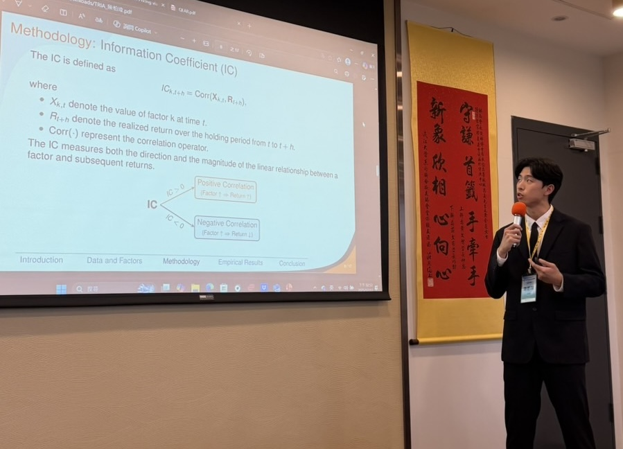

Research
My research experience primarily focuses on Machine Learning and Deep Learning. Currently, I am working on Denoising Diffusion Probabilistic Models (DDPM) at Academia Sinica, where we develop a Bayesian framework that integrates catalytic priors derived from classical statistical models to enhance predictive stability and uncertainty quantification. Additionally, I also conducted research on empirical asset pricing in the cryptocurrency market, comparing multiple machine learning methods—such as tree-based models, gradient boosting, Support Vector Regression (SVR), K-Nearest Neighbors (KNN), and neural networks—to construct effective factor investing strategies.
In Progress
-
Bayesian Inference for Diffusion Models: Integrating Synthetic and Observed Data with Catalytic Priors
Research Assistant Project at the Institute of Statistical Science, Academia Sinica.
Published
- To be added.
Conference Presentations
-
Empirical Asset Pricing via Machine Learning for Cryptocurrency [Slide]Authors: Po-Wei Chen, Li-Han Chang, Hung-Wen Cheng, and Pei-Jie Hsiao2025 Annual Conference and International Symposium of the Taiwan Risk and Insurance Association (TRIA), Taipei, Taiwan.

Course Projects
-
Regression Analysis for Crime Rate in New York State
Course: Regression Analysis, Soochow University (Feb. 2025 – June 2025). -
Comparing Numerical Methods for Moment Calculation in the Bivariate Normal MGF
Course: Numerical Analysis, Soochow University (Feb. 2025 – June 2025). -
Factor Investing with Machine Learning
Course: Big Data and Fintech Practice, Soochow University (Feb. 2024 – June 2024).